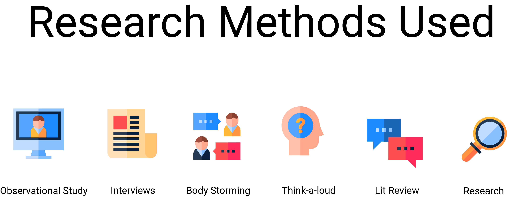
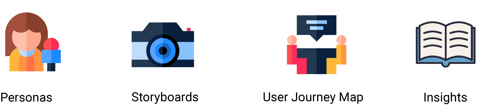
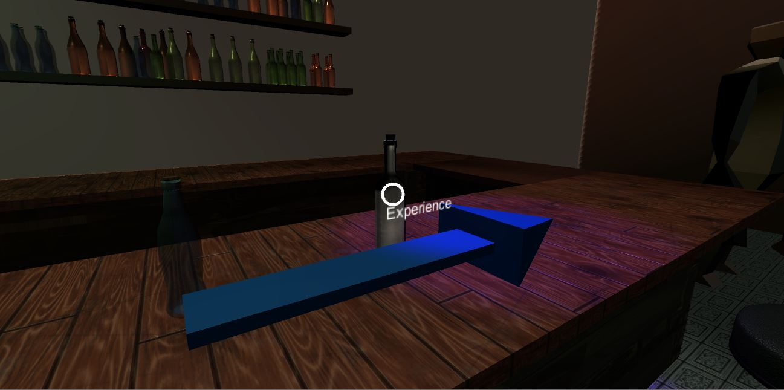
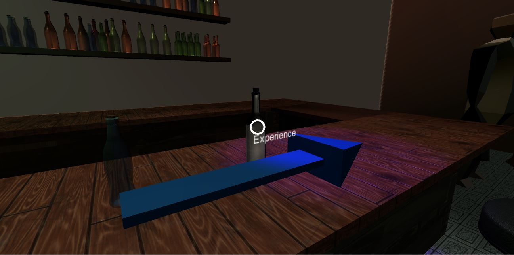

Collaboration Team:
Maya Okada-Zalewski, Mohammad Amin Mohammadi, Heath McGregor
Introduction
Young people continue to drink underage, binge drink and partake in subsequent risky behaviours even though they are aware of the risks and consequences.
Our problem ares then afforded us a great opportunity. Currently, The focus seems to be aimed at minimising risk, assuming Australian youth are going to drink as a cultural rite of passage and teaching them how to look after each other in precarious situations rather than encourage them to reframe this perception that it is an expected norm. We have designed a VR system that is aimed at educating our target audience.
Overview of Process
Our Design Solution/Concept Video
Design
Opportunity
Overview
Underage drinking is a serious public health problem in Australia. Alcohol is the most widely used abuse among Australia’s youth, and drinking by young people poses enormous health and safety risks. The consequences of underage drinking can affect everyone - regardless of age or drinking status.The current strategies implemented into the education system surrounding alcohol consumption amongst individuals aged 14 - 18 is executed through traditional practises, resulting in students being unmotivated, uninterested and unable to retain information.
Research Methods
Synthesis Methods
Research and insights from Task One
Research
and insights
Underage Drinking
Alcohol consumption in a prominent factor in Australian culture, resonating with different age groups. Alcohol has become more affordable and available in Australia with the number of liquor licenses increasing around the country over the last 15 years. Increases in the density of liquor outlets have shown to elevate rates of violence and other alcohol-related harm. More than 17.1% of Australians consume alcohol at a level that puts them at risk of harm from alcohol-related disease or injury over their lifetime and 25.5% drink at levels on a monthly basis that pose a risk in terms of short-term harms, such as injury.
Young people between the ages of 10 and 24 face specific risks in relation to alcohol problem. Rates of risky behaviours are generally higher among young people than the broader population. Alcohol use has a higher prevalence among young people and associated harm can be reduced by delaying initiation. The young brain is more susceptible to permanent damage from alcohol use which also makes this group a core priority.
Gaming
Many students play (computer) games in their leisure time, thus acquiring skills which can easily be utilized when it comes to teaching more sophisticated knowledge. Gaming has increased in popularity over the years as the graphical interface has molded into a realistic environment. 67% of Australians play video games with 77% of players are aged 18 years or older (E.Brand, Todhunter & Jervis, 2018). Students with previous or similar knowledge will understand the process of gaming and the importance of interaction, thus executing these skills to various games. For better health, participants said video games 84% can improve thinking skills with 78% can improve dexterity. Referring to the use of video games for schools/parents, 71% can be effective for teaching students with 50% have been used by their children in the school curriculum.
Education System
The Australian Government is devoted in creating a world-class educational experience to support emerging students. In relation to the Australian Curriculum, students are provided access to high quality, relevant and engaging subject material. However, traditional practises that are performed in the class-room environment are becoming ineffective when referring to the outside the class-room environment. Students are retaining ONLY information received in-class for assessment purposes, later dismissing information and/or being unable to execute those practises. New models of schooling are necessary as educational institutions attempt to transition into the digital age.
Virtual Reality
What distinguishes VR from traditional practises is the sense of immediacy and control created by immersion: “the feeling of being there” or presence that comes from changing visual display (Psotka, 1995). It adds value by offering unique new viewpoints while maintaining the core goals of education, “fostering a learning culture that promotes creativity, independence and responsibility” (Eng.uvm.dk, 2019). VR simulations can have a positive impact on cognitive and non-cognitive outcomes. Results from a recent meta-analysis suggest that students who receive a combination of non-immersive VR and traditional teaching outperform students who either receive traditional teaching, 2-D images or no treatment (Merchant et al. 2014).

Justification of Problem
The research projected that high-school and university students are unengaged in the traditional methods of teaching, resulting in the decline of motivation and interaction in classroom environments. The aim of our design is to immerse individuals aged 12 - 18 into a virtual environment using Virtual Reality (VR) that educates the user on the impacts, consequences, and experiences through a series of interactive games. VR unlocks potential; giving students new ways to experience learning, ensuring students are engagement, motivation and that their being challenged.
Concepts
Design
Overview
We concluded with 3 design concepts, later presenting these strategies to tutors and peers during weeks 8 - 9. Regarding the feedback and group reflection, the virtual reality solution met our expectations and we then went along with this idea for our final assessment task. experience learning, ensuring students are engagement, motivation and that their being challenged.
Immersing users into a virtual reality (VR) via google cardboard, that confronts the user with interactive displays, projecting how damaging alcohol plays on the human body through time and contrast.
Limations
The limitations of the concept surrounds accessibility of the required technology. Integrating this onto the education system requires all schools owning and/or hiring the VR headset, depending on the type of VR it would be highly expensive to accommodate all students.
A software application that provides users the ability to track the number of standards they've consumed with an accurate measure of their BAC. The platform allows users to view the location and current status of other users (with permission), also integrating a notification systems will prompt the user with safe drinking habits.
Limations
The viability of this concept is a clear and constructive solution, however regarding other competitors within the market, it would not be as innovative and capturing. The concept does not prevent underage drinking, rather providing tools to safe drinking. We would rather our solution to initially prevent drinking.
A personal monitor that tracks the amount of standards the user has consumed via glass-wear. The glass-wear will interact with the user, indicating the number of standards through sensory technologies and calculate the users BAC, appearing on the glass.
Limations
A fun and innovative design that captured the aim for the objective, however these technologies aren’t currently available and difficult to maintain.
User Research Methods
User Journey Map
Persona

Story Boards
Iteration
Overview of personas, user journey maps and storyboards developed for each concept.
User Testing One

Reflection
We began the first stage of the user centred design process through observing the human interaction of our sketched paper prototypes. We did this in a less structured manor. Firstly observing the users and there natural interaction with the paper prototype to see what they were drawn to and what stood out. We then went through the 3 different scenarios/ activities that would have taken place to get their feedback. This was out initial round of think aloud testing. We gained an understanding into what users preferred and found intuitive. As it was unstructured it allowed us to test our concepts and ideas - that we intended on having in our final VR educational simulation. This was then followed by a mini interview to get some feedback as to what the users enjoyed, did not and any feedback to improve the concept.
User Testing Two
This Lead us to create a cardboard mockup. The goal of this round of Testing was to learn how users interact with our designs and how to then take the visual design and prompts needed for the next round of testing. We decided to do this at a larger scale to simulate the physical and sensorimotor affordances of interacting with VR. This next stage then required the users to stand in front of the cardboard again we wanted to further understand what intutive movements they had and interactions they naturally took. In an attempt to replicate the feeling of being in a VR simulation - we gave the users google to wear to reduce vision on either side of them.
Reflection
This was an effective stage of testing as we were able to move around paper cutouts of the various objects within our simulation. Allowing us to convey the different scenarios and activities that take place within our VR environment. Upon reflection we should have conducted A/B testing of two different scenarios and environments to see whether the users preferred a certain scene - and for educational purposes using this demographic to test our prototype on.
User Testing Three
Reflection
This prototype was the first to immerse users into the contextual environment thus observing their interaction with the virtual world via google cardboard. We aimed to develop this iteration as it low fidelity did not project the vision we wanted.
In response to our previous feedback, we increased the scale and design of the original paper prototype and began formulating a basic simulation in order to observe the interaction between users. This resulted in constructive user feedback on both function and aesthetics that provided us with clear guidelines to better improve, and lead into a high fidelity prototypes.
A majority of users stated that due to the low fidelity, they did not receive any visual prompts making it difficult to continue the process.
A majority of users stated that due to the low fidelity, they did not receive any visual prompts making it difficult to continue the process.
User Testing Four
Reflection
We visited SCEGGS, a local high-school in Darlinghurst to test our prototype on students aged between 12 - 18. Our aim was to learn what drives positive experiences within the classroom environment and gain insights as to how they interact with the visual reality with the google cardboard.
We outlined the purpose and context of our “VR lesson” to the students, emphasising that their participation was purely for educational purposes. We allowed users to interact with the prototype with no input from us. The aim was to understand their intuitive movements and what they would when in the simulation.
In reflection, testing the paper prototype on the high school students would have improved the results and observations. However, it was really positive and constructive feedback as they emphasised how they enjoyed the activities and encouraged us to present a full simulation. Commenting “it was overall very engaging and insightful.”
User Testing Five

Reflection
Stage 5 of user testing, we aimed to understand the interaction and engagement between users and the simulation via 3Dsmax. We observed the users mentality while completing the activities within our simulation on the computer.
We were able to iterate and implement visual objects such as a brain into the simulation while replicating the exact sound that would be heard via phone. However, we failed to get our phone “text messages” to work as it was too difficult in our user testing. Participants didn't understand what we were trying to achieve through having it. We were also unable to get our character to walk, due to our skills set.
 

Final Iteration
Reflection
Improvement
In collaboration with our concept, we made an executive decision to combine our virtual reality experience with the traditional methods of teaching, thus creating an innovative and informative environment for students. Teachers will be provided a structured session with the required tools and skills to educate their students about the harmful impacts of alcohol consumption. Maintaining the traditional methods of teaching allow us to further develop our solution and slowly familiarise virtual reality with students, later having full integration of the technology within all areas.
Feedback
Reflecting on the overall process of our final design, it was a challenging journey as it tested our team and individual skills. We became formalized with software programs such as unity, atom, sketch, and InDesign. Regarding the concept, we wished our time management was better to develop more iterations and increase the number of methods used. For furture reference, we'd become stricter with deadlines and have set meeting times to understand each others standards and expectations for the assessment.